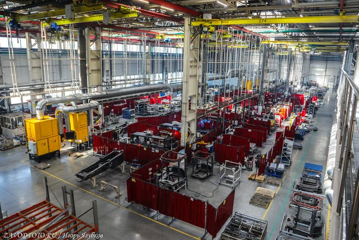

1. Сварочный участок
Создание трактора начинается с производства комплектующих. В этом деле задействована вся семья Ростсельмаш. Сотни автоматических манипуляторов и опытные сварщики соединяют рамы и жатки. Каждый шов проверяется на прочность — техника должна выдерживать суровые полевые условия.

2. Сборочный конвейер
Завод ориентирован на выпуск полного модельного ряда тракторов мощностью от 170 до 600+ лошадиных сил. Здесь из тысяч деталей собирают легендарные TORUM и ACROS. Бригады работают слаженно, как единый механизм. С конвейера машины съезжают полностью готовыми к работе в поле.

3. Инженерный корпус
Мозг завода. Именно здесь конструкторы разрабатывают новые узлы, проводят испытания и внедряют цифровые технологии точного земледелия. При этом вся история сборки конкретного трактора сохранится в его электронном паспорте.

4. Центральный склад
Готовые детали отправляются в логистический комплекс. На территории более 15 000 м2 разместились 11-метровые паллетные стеллажи общей емкостью 18 000 ячеек. Благодаря современной автоматизации, нужная деталь для конкретного комбайна находится за считанные минуты.Этого запаса хватает на три недели работы завода.

5. Прессовый участок
Здесь металл обретает форму. Мощные гидравлические прессы с силой в тысячи тонн штампуют кабины, облицовку и детали кузова. Производственные мощности РПРЗ по лазерному раскрою металла являются крупнейшими в Европе и насчитывают 18 единиц оборудования. Именно здесь рождается узнаваемый агрессивный дизайн современных комбайнов.

6. Литейное производство
Комплекс высокотехнологичных производств, выпускающих отливки из различных металлов: серого чугуна, стали, цветных металлов. Здесь отливают сложные корпусные детали, шестерни и элементы двигателей. Литейному заводу отводилась важная роль в обеспечении огромного предприятия чугунным и стальным литьем.

7. Цех окраски
На заводе есть малая и большая линии окраски. Малая линия окраски площадью 1 368 м2, где на детали наносят лакокрасочные покрытия электростатическим пневмораспылением. Большая окрасочная линия имеет площадь уже 7 200 м2. Каждая деталь проходит многоступенчатую очистку и покрывается антикоррозийным составом. Фирменные цвета «Ростсельмаша» наносятся в роботизированных камерах.

8. Испытательный полигон
Далее машина выезжает на специализированный пробеговый трек, где уже вне производственного корпуса проводятся функциональные и тормозные испытания. На полигоне машины проходят тесты на проходимость, проверку всех систем и имитацию уборки поля. После всех испытаний машину моют, упаковывают и отправляют на отгрузку.